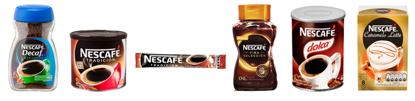
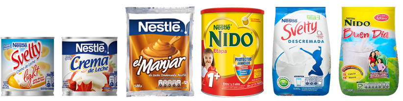
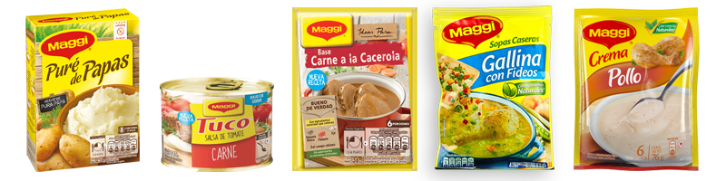
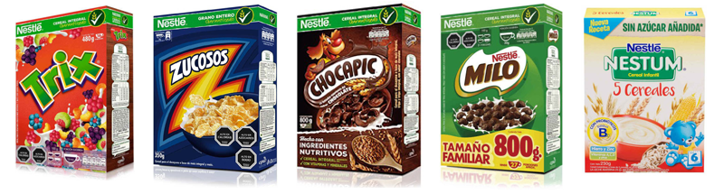

Los abarrotes en la cotidianidad
Queremos ser parte de tu día a día
Los abarrotes están siempre presente a lo largo de nuestra jornada. Desde un café en la mañana para despertarnos, pasando por sopas y fideos, hasta un chocolate caliente por la tarde, son productos que se hacen concurrentes en nuestra vida cotidiana. En COMECH, te apoyamos para que logres ser formar una conexión habitual con tus clientes y que ellos te distingan como su canal preferido para que formes también parte de su día.
Café
NESTLÉ© Nescafé es tu elección
Desde 1938, Nescafé nació con la idea de que el café fuera preparado de manera instantánea. Esta idea innovadora, le ha valido para ser la marca más reconocida de café a nivel mundial desde aquel entonces. A través de los años, Nescafé ha sabido renovarse y adaptarse a los cambios y gustos de las nuevas generaciones. Por ello, te ofrecemos una gran variedad en presentaciones y sabores que puedes exhibir en tus anaqueles generando el nexo de confianza que ofrece contar con esta marca dentro de tu negocio.

Lácteos
Con vitaminas y minerales para tu sustento diario
Nutrición completa para grandes y chicos. Los lácteos conforman un gran alimento que puede ser consumido de diversas maneras: puede tomarse como bebida, es ingrediente básico en tortas, queques y dulces, sirve como acompañanate de cereales, complemento de preparaciones para bebidas y es fundamental en períodos de lactancia para bebés. En base a lo anterior, te ofrecemos diferentes presentaciones que se acomoden a las necesidades de tu negocio, contando con productos como: Crema de Leche, Leche Condensada, Manjar, Leche Nido, Nido Instantánea para Niños, Nido Buen día, Svelty.

Preparaciones para Bebidas
Chocolate caliente para iniciar el día
Sabemos que iniciar el día de la mejor manera es dándose un gusto. Para tus clientes, te presentamos las marcas más representativas del mercado: Milo y Nesquik. Preparaciones achocolatadas que pueden convertirse fácilmente en el deleite de tu tiempo en casa, oficina o de entretenimiento. La mejor calidad y sabor notablemente superior en diferentes presentaciones tenemos para ser mostradas tus compradores.

Culinarios
Agrega sabor a tus comidas
A la hora de colación, tenemos la alternativa para mejorar las degustaciones de tus clientes. Con preparaciones instantáneas que te ayudan a ahorrar tiempo, contar con nuestros productos culinarios te sube un peldaño por encima de la competencia, pues contamos con los productos Maggi: Caldos de diferentes sabores y condimentos, Puré de Papas y Tucos con salsa de tomate, acompañantes ideales que no pueden faltar en tus aperitivos.

Cereales de Adulto e Infantiles
Un buen desayuno es fundamental
Un alimento que cumple como fuente de nutrición completa y con sabores que agradan a todo público, te traemos una diversa selección de Cereales con las sensaciones más gustosas: Chocapic, Zucosos, Trix, Milo. Para los más chicos del hogar, presentamos nuestra propuesta más sana y fortificante: Nestum, con Hierro, Zinc, Vitaminas A, C, D y Arroz constituye el alimento necesario que puede complementarse con el período de lactancia de nuestros pequeños.

Alimentos Infantiles
Dirigido los más consentidos del hogar
Consiente a los más pequeños sin dejar de lado todas las proteínas, carbohidratos, vitaminas y minerales necesarias para su crecimiento. Nestlé© colados es la solución que te ofrecemos para fomentar la nutrición necesaria para nuestros pequeños. Con sabores de carne, pollo, frutas y verduras, abarcan los distintos gustos que puedan tener los bebés en esa etapa de crecimiento.